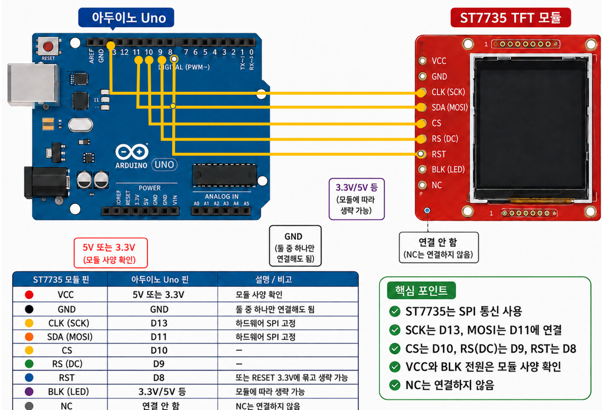

ST7735 + 아두이노로 배우는 센서 데이터 시각화 ST7735 + 아두이노로 배우는 센서 데이터 시각화
Table of Contents
그 다음 export.
1. 들어가며
이 교재는 ST7735 컬러 TFT 디스플레이와 아두이노를 이용해 센서 데이터를 화면에 보기 좋게 표시하는 방법을 단계별로 익힌다. 가변저항(포텐셔미터)으로 모든 기법을 먼저 익힌 뒤, 마지막에 실제 센서로 바꿔 끼우는 순서로 진행한다.
목표는 “값을 읽어서 → 화면에 표시하고 → 끊김 없이 갱신한다”는 한 줄기를 끝까지 완성하는 것이다. 글씨와 도형 출력에서 시작해 부분 갱신, 막대그래프를 거쳐 작은 대시보드를 직접 만들고, 마지막으로 버튼 입력으로 색을 바꾸는 응용까지 다룬다.
각 단계는 *설명*(개념), *핵심 포인트*(꼭 기억할 점), *주요 함수*(사용법과 특징)로 이루어져 있으며, 모든 예제의 전체 코드는 문서 끝의 부록에 모아 두었다.
2. ST7735 디스플레이 이해하기
2.1. ST7735 소개
2.1.1. 설명
ST7735는 1.8인치 내외의 소형 컬러 TFT LCD를 구동하는 드라이버 칩의 이름이다. 저렴하고 자료가 풍부해 입문용으로 널리 쓰인다. 이 교재에서는 가변저항을 돌리면 숫자와 막대그래프가 실시간으로 변하는 화면을 직접 만들어 본다.
2.1.2. 핵심 포인트
- “ST7735”는 칩 이름이고, 빨간색·검은색 PCB로 된 여러 모듈에 같은 칩이 들어간다.
- 같은 칩이라도 모듈마다 초기화 방식이 조금씩 다르다(뒤에서 다루는 탭 종류).
2.2. 통신 방식
2.2.1. 설명
ST7735는 SPI(Serial Peripheral Interface) 방식으로 아두이노와 통신한다. SPI는 클럭선(SCK)에 맞춰 데이터선(MOSI)으로 비트를 빠르게 흘려보내는 직렬 통신이다. 화면 전체를 빠르게 칠해야 하므로 속도가 중요하고, 그래서 더 느린 I2C 대신 SPI를 쓴다.
2.2.2. SPI 통신 자세히 알아보기
SPI는 한 대의 *마스터*(아두이노)가 한 대 이상의 *슬레이브*(여기서는 ST7735)를 제어하는 통신 방식이다. 마스터가 통신의 주도권을 쥐고, 클럭에 맞춰 데이터를 한 비트씩 주고받는다.
SPI는 기본적으로 네 개의 선을 쓴다.
- SCK(클럭) : 마스터가 만드는 박자. 이 신호가 한 번 변할 때마다 데이터 한 비트가 전달된다. 즉 SCK가 통신의 속도를 정한다.
- MOSI(Master Out, Slave In) : 마스터 → 슬레이브 방향의 데이터선. 아두이노가 화면에 보내는 그림·명령이 이 선으로 흐른다. ST7735 모듈에는 SDA로 표기되기도 한다.
- MISO(Master In, Slave Out) : 슬레이브 → 마스터 방향의 데이터선. ST7735는 화면에 그리기만 하고 아두이노로 되돌려 보낼 데이터가 거의 없으므로, 이 선은 보통 쓰지 않는다.
- CS(Chip Select) : 어느 슬레이브에게 말하는지 고르는 선. 마스터가 CS를 LOW로 내리는 동안에만 그 장치가 통신에 응답한다. 슬레이브가 여러 개일 때 각각을 구분하는 역할을 한다.
데이터가 전달되는 과정을 정리하면, ① 마스터가 통신할 슬레이브의 CS를 LOW로 내리고, ② SCK로 박자를 만들면서 ③ 그 박자에 맞춰 MOSI로 비트를 하나씩 흘려보낸다. 비트가 한 줄로 차례차례 전달되므로 직렬(serial) 통신이라고 부른다.
ST7735에는 SPI 표준 네 선 외에 DC(RS) 핀이 하나 더 있다. 이 핀은 지금 보내는 바이트가 “그릴 데이터”인지 “명령”인지를 화면에 알려 준다. DC가 한쪽이면 명령(예: 어디부터 그릴지 지정), 다른 쪽이면 데이터(실제 색 정보)로 해석된다. 그래서 ST7735 배선에서 CS, DC가 필수인 것이다.
널리 쓰이는 또 다른 통신 방식인 *I2C*는 선이 2개뿐이라 배선은 간단하지만 속도가 느리다. 화면은 매 순간 수많은 픽셀을 갱신해야 해서 속도가 중요하므로, ST7735는 더 빠른 SPI를 쓴다.
2.2.3. 핵심 포인트
- SPI는 마스터(아두이노)가 클럭(SCK)에 맞춰 데이터(MOSI)를 한 비트씩 보내는 직렬 통신이다.
- CS로 어느 장치에 말하는지 고르고, ST7735는 DC(RS)로 명령과 데이터를 구분한다.
- ST7735는 받기만 하면 되므로 MISO선은 보통 쓰지 않는다.
- 아두이노 Uno에서 하드웨어 SPI 핀은 SCK=13, MOSI=11로 고정되어 있다.
2.3. 해상도와 좌표계
2.3.1. 설명
ST7735 모듈은 대표적으로 128×160(세로형)과 128×128(정사각형) 두 종류가 있다. 화면의 좌측 상단이 원점 (0,0)이고, x는 오른쪽으로, y는 아래로 증가한다.
2.3.2. 핵심 포인트
- 수학에서 배운 좌표(y가 위로 증가)와 반대로, 화면에서는 y가 아래로 증가한다.
- 좌표 개념은 이후 글씨 위치, 도형, 막대그래프, 대시보드 배치의 기초가 된다.
2.4. 라이브러리 설치
2.4.1. 설명
두 개의 라이브러리를 함께 사용한다.
Adafruit_GFX: 글씨·선·도형을 그리는 공통 엔진. 화면 종류와 무관한 부분이다.Adafruit_ST7735: ST7735 칩에 실제 명령을 내리는 드라이버. GFX가 시킨 일을 이 칩이 알아듣는 신호로 바꾼다.
아두이노 IDE의 라이브러리 매니저에서 “Adafruit ST7735”를 검색해 설치하면, GFX가 함께 설치된다.
2.4.2. 핵심 포인트
- GFX는 “그리는 법”을, ST7735는 “이 화면에 그리는 법”을 담당한다.
- 두 라이브러리가 모두 설치되어 있어야 예제가 동작한다.
2.5. 자주 겪는 문제 미리 알아두기
2.5.1. 설명
ST7735를 처음 쓸 때 흔히 부딪히는 두 가지를 미리 알아둔다.
- 탭(tab) 종류 : 모듈마다 black/green/red tab이 있어, 초기화 옵션을 잘못 주면 색이 반대로 나오거나 화면이 몇 픽셀 밀려서(offset) 나온다.
- 화면 회전 : 모듈을 가로/세로 어느 방향으로 놓느냐를 코드에서 맞춰 줘야 한다.
2.5.2. 핵심 포인트
- 화면이 안 나오거나 색·위치가 이상하면 먼저 탭 종류와 회전을 점검한다.
- 탭 옵션은
INITR_BLACKTAB,INITR_GREENTAB,INITR_REDTAB가 있으며, 128×128 모듈은INITR_144GREENTAB를 쓴다.
3. 배선과 첫 화면 띄우기
3.1. 핀 연결 이해하기
3.1.1. 설명
모듈의 주요 핀과 역할은 다음과 같다. 같은 핀이라도 모듈에 따라 표기가 다르므로, 함께 쓰이는 다른 이름도 적어 둔다.
| 핀(표기) | 역할 | 필수 여부 |
|---|---|---|
| VCC | 전원 | 필수 |
| GND | 접지 | 필수 |
| CLK(SCK) | SPI 클럭 | 필수 |
| SDA(MOSI) | 데이터(아두이노 → 화면) | 필수 |
| CS | 칩 선택(이 장치에 명령을 보낸다는 신호) | 필수 |
| RS(DC, A0) | 데이터/명령 구분 | 필수 |
| RST | 리셋 | 권장 |
| BLK(LED) | 백라이트 | 선택 |
| NC | 연결하지 않음(No Connection) | - |
핀 라벨이 CS RST RS SDA CLK NC NC NC GND GND VCC 순서로 적힌 모듈을 많이 쓰는데,
이때 SDA가 MOSI, CLK가 SCK, RS가 DC와 같은 핀이다. NC 3개는 연결하지 않고, GND는
둘 중 하나만 연결해도 된다.
3.1.2. 핵심 포인트
- 데이터/명령 구분 핀은 모듈에 따라 RS, DC, A0로 표기가 다르지만 모두 같은 핀이다.
- 데이터선은 SDA 또는 MOSI, 클럭선은 CLK 또는 SCK로 표기된다.
- RST는 권장이며, 아두이노 RESET이나 3.3V에 묶고 코드에서
-1로 지정하면 생략할 수 있다. - BLK(백라이트)는 모듈에 따라 항상 켜지도록 되어 있어 생략 가능한 경우가 있다. 화면이 캄캄하면 이 핀부터 확인한다.
3.2. 배선하기
3.2.1. 설명
SCK/MOSI는 하드웨어 SPI 고정 핀(13/11)에 연결하고, CS/DC/RST는 원하는 디지털 핀을 골라 코드의 정의와 일치시킨다. 모듈 로직은 본래 3.3V이므로, Uno(5V)에 연결할 때는 온보드 레귤레이터나 레벨시프터가 있는 모듈인지 확인한다.
아두이노 Uno 기준 연결은 다음과 같다. 이 배선은 교재 예제의 핀 정의
(TFT_CS=10, TFT_DC=9, TFT_RST=8)와 그대로 일치한다.
| 모듈 핀 | 아두이노 Uno | 비고 |
|---|---|---|
| VCC | 5V 또는 3.3V | 모듈 사양 확인 |
| GND | GND | 둘 중 하나만 연결해도 됨 |
| CLK(SCK) | D13 | 하드웨어 SPI 고정 |
| SDA(MOSI) | D11 | 하드웨어 SPI 고정 |
| CS | D10 | |
| RS(DC) | D9 | |
| RST | D8 | 또는 RESET·3.3V에 묶고 생략 |
| BLK(LED) | 3.3V/5V 등 | 모듈에 따라 생략 가능 |
| NC | 연결 안 함 |

3.2.2. 핵심 포인트
- 코드의 핀 번호 정의와 실제 배선이 한 핀이라도 다르면 동작하지 않는다.
- 전압(3.3V / 5V)을 모듈 사양에 맞춰 연결한다. 확실하지 않으면 3.3V부터 시도하는 것이 안전하다.
3.3. 첫 화면 띄우기
3.3.1. 설명
라이브러리를 초기화한 뒤 배경색으로 화면을 한 번 채워, 디스플레이가 정상 동작하는지 확인한다. 기본 골격은 다음과 같다.
#include <Adafruit_GFX.h>
#include <Adafruit_ST7735.h>
#include <SPI.h>
#define TFT_CS 10
#define TFT_DC 9
#define TFT_RST 8
Adafruit_ST7735 tft = Adafruit_ST7735(TFT_CS, TFT_DC, TFT_RST);
void setup() {
tft.initR(INITR_BLACKTAB); // 모듈의 탭 종류에 맞춰 선택
tft.fillScreen(ST77XX_BLACK);
}
void loop() {}
3.3.2. 핵심 포인트
setup()에서initR()로 먼저 초기화해야 그 뒤의 그리기 함수가 동작한다.- 화면에 배경색이 깔리면 배선과 초기화가 정상이라는 뜻이다.
3.4. 문제 해결
3.4.1. 설명
화면이 제대로 나오지 않을 때는 다음 순서로 점검한다.
- 화면이 캄캄하다 → 백라이트(BLK) 연결, 전원, 핀 정의와 배선 일치 여부를 확인.
- 색이 반대거나 화면이 밀려 나온다 →
initR()의 탭 옵션을 바꿔 본다. - 방향이 맞지 않는다 →
setRotation()으로 회전한다.
3.4.2. 핵심 포인트
- 탭 옵션은 모듈마다 다르므로, 맞는 것이 나올 때까지 하나씩 바꿔 본다.
setRotation()으로 회전하면 화면의 가로·세로가 서로 바뀐다.
3.4.3. 주요 함수
tft.initR(uint8_t options): ST7735 초기화.options에 모듈의 탭 종류를 넘긴다. 잘못 주면 색 반전이나 위치 오프셋이 생긴다.tft.setRotation(uint8_t r): 화면 방향 설정.r은 0~3(시계방향 90°씩). 회전하면 폭/높이 기준이 달라진다.tft.fillScreen(uint16_t color): 화면 전체를 한 색으로 채운다. 배경을 깔거나 전체를 지울 때 쓴다.
4. 기본 출력 익히기
4.1. 글씨 출력
4.1.1. 설명
글씨 출력은 “커서를 옮기고 → 색·크기를 정하고 → 출력한다”의 세 단계로 이뤄진다.
tft.setCursor(10, 20);
tft.setTextColor(ST77XX_WHITE);
tft.setTextSize(2);
tft.print("Hello");
4.1.2. 핵심 포인트
setCursor의 좌표는 글씨의 좌측 상단 기준이다.setTextSize는 기본 폰트를 정수배로 키우는 것이라, 크게 키울수록 계단 모양이 보인다.
4.1.3. 주요 함수
tft.setCursor(int16_t x, int16_t y): 다음 글씨가 출력될 좌측 상단 좌표 지정. 출력 후 커서는 오른쪽으로 이동한다.tft.setTextColor(uint16_t color): 글씨 색만 지정. 배경은 투명이라, 같은 자리에 덮어 쓰면 이전 글씨가 남는다.tft.setTextColor(uint16_t color, uint16_t bg): 글씨 색과 배경색을 함께 지정. 배경색을 주면 글씨 영역이 자동으로 덮인다.tft.setTextSize(uint8_t s): 글씨 배율. 1이 기본, 2면 가로·세로 2배.tft.print(...)/tft.println(...): 문자열·숫자를 커서 위치에 출력.
다음 코드는 각 함수의 특징을 하나씩 보여 준다.
// (1) setCursor: 좌표가 글씨의 좌측 상단 기준임을 확인
tft.setCursor(0, 0); // 화면 맨 위 왼쪽
tft.print("A");
tft.setCursor(60, 30); // 오른쪽 아래로 이동한 위치
tft.print("B"); // A와 B의 시작점이 서로 다름
// (2) setCursor + print: 출력 후 커서가 오른쪽으로 자동 이동
tft.setCursor(0, 50);
tft.print("12");
tft.print("34"); // setCursor 없이 이어 쓰면 "1234"로 붙어 나옴
// (3) setTextColor(색): 배경 투명 -> 같은 자리에 덮어 쓰면 잔상이 남음
tft.setCursor(0, 70);
tft.setTextColor(ST77XX_WHITE);
tft.print("888"); // 먼저 888을 그린 뒤
tft.setCursor(0, 70);
tft.setTextColor(ST77XX_RED);
tft.print("1"); // 같은 자리에 1만 덮어쓰면 뒤의 88이 그대로 남음
// (4) setTextColor(색, 배경색): 배경색이 글씨 영역을 자동으로 덮어 잔상 방지
tft.setCursor(0, 90);
tft.setTextColor(ST77XX_WHITE, ST77XX_BLACK);
tft.print("888");
tft.setCursor(0, 90);
tft.setTextColor(ST77XX_RED, ST77XX_BLACK);
tft.print("1"); // 배경색이 함께 칠해져 888이 깨끗이 지워짐
// (단, 1은 888보다 폭이 좁아 자릿수 차이는 못 막음)
// (5) setTextSize: 같은 글씨를 크기만 다르게
tft.setCursor(0, 110);
tft.setTextColor(ST77XX_YELLOW);
tft.setTextSize(1);
tft.print("size1");
tft.setCursor(0, 125);
tft.setTextSize(2); // 가로·세로 2배 (계단 모양이 보임)
tft.print("size2");
// (6) print vs println: println은 출력 후 다음 줄로 커서를 내림
tft.setCursor(0, 150);
tft.setTextSize(1);
tft.println("line1"); // 출력 후 자동 줄바꿈
tft.print("line2"); // setCursor 없이도 아랫줄에 출력됨
4.2. 색상 다루기
4.2.1. 설명
ST7735는 한 픽셀의 색을 16비트로 표현한다(RGB565: 빨강 5비트, 초록 6비트, 파랑
5비트). 초록이 1비트 더 많은 것은 사람 눈이 초록에 더 민감하기 때문이다. 자주 쓰는
색은 ST77XX_RED 같은 상수로 제공되고, 원하는 색은 color565() 로 만든다.
4.2.2. 핵심 포인트
- 24비트(0~255) 감각으로 만든 색이 16비트로 압축되면서 약간 달라질 수 있다.
- 색이 의도와 다르게(반대로) 나오면 탭 옵션 문제일 수 있다.
4.2.3. 주요 함수
tft.color565(uint8_t r, uint8_t g, uint8_t b): 0~255의 R/G/B를 16비트 색값으로 변환해 반환한다. 변수에 저장해 두고 재사용할 수 있다.- 색 상수: 라이브러리(
Adafruit_ST7735.h)가 미리 정의해 둔 색 이름. 아래가 제공되는 전부다.
| 상수 | 색 | RGB565(16진) |
|---|---|---|
ST77XX_BLACK |
검정 | 0x0000 |
ST77XX_WHITE |
흰색 | 0xFFFF |
ST77XX_RED |
빨강 | 0xF800 |
ST77XX_GREEN |
초록 | 0x07E0 |
ST77XX_BLUE |
파랑 | 0x001F |
ST77XX_CYAN |
청록 | 0x07FF |
ST77XX_MAGENTA |
자홍 | 0xF81F |
ST77XX_YELLOW |
노랑 | 0xFFE0 |
ST77XX_ORANGE |
주황 | 0xFC00 |
기본 제공 상수는 이 9가지뿐이다. 그 외의 색(분홍, 하늘색, 회색 등)은 color565()
로 직접 만들어 쓴다. 예: uint16_t gray = tft.color565(128, 128, 128);
참고로 예전 라이브러리나 다른 예제에서는 ST7735_RED 처럼 ST7735_ 접두사를
쓰기도 하는데, 최신 라이브러리에서는 ST77XX_ 가 표준이다.
4.2.4. 아나로그값 출력해보기(조이스틱)
#+begin_src c #include <Adafruit_GFX.h> #include <Adafruit_ST7735.h> #include <SPI.h>
#define TFT_CS 10 #define TFT_DC 9 #define TFT_RST 8 #define JOY_X A0
Adafruit_ST7735 tft = Adafruit_ST7735(TFT_CS, TFT_DC, TFT_RST);
void setup() { tft.initR(INITR_BLACKTAB); tft.fillScreen(ST77XX_BLACK); tft.setTextSize(2); }
void loop() { int xValue = analogRead(JOY_X); // 0~1023
// 값이 출력될 자리만 지우기 (잔상 제거) tft.fillRect(0, 40, 120, 20, ST77XX_BLACK);
// “X: xxxx” 출력 tft.setCursor(0, 40); tft.setTextColor(ST77XX_WHITE); tft.print(“X: ”); tft.print(xValue);
delay(100); }
4.2.5. 깜빡임 제거버전
#include <Adafruit_GFX.h>
#include <Adafruit_ST7735.h>
#include <SPI.h>
#define TFT_CS 10
#define TFT_DC 9
#define TFT_RST 8
#define JOY_X A0
Adafruit_ST7735 tft = Adafruit_ST7735(TFT_CS, TFT_DC, TFT_RST);
void setup() {
tft.initR(INITR_BLACKTAB);
tft.fillScreen(ST77XX_BLACK);
tft.setTextSize(2);
tft.setTextColor(ST77XX_WHITE, ST77XX_BLACK); // 글씨색, 배경색 함께 지정
}
void loop() {
int xValue = analogRead(JOY_X); // 0~1023
tft.setCursor(0, 40);
tft.print("X: ");
tft.print(xValue);
tft.print(" "); // 자릿수 줄어들 때 남는 잔상을 공백으로 덮기
delay(100);
}
#+end_src
4.3. 도형 그리기
4.3.1. 설명
선과 사각형을 중심으로 도형을 익힌다. 이 두 가지가 이후 막대그래프의 재료가 된다.
tft.drawLine(0, 0, 50, 30, ST77XX_WHITE); // 선
tft.drawRect(10, 40, 60, 20, ST77XX_GREEN); // 테두리 사각형
tft.fillRect(10, 70, 60, 20, ST77XX_GREEN); // 채운 사각형
4.3.2. 핵심 포인트
- 사각형 함수의 인자는 (시작 x, 시작 y, 폭, 높이, 색)이다. “끝 좌표”가 아니라 폭과 높이라는 점이 막대그래프에서 중요하다.
- 막대그래프는 폭(또는 높이)이 변하는
fillRect하나로 만들 수 있다.
4.3.3. 주요 함수
tft.drawPixel(x, y, color): 점 하나를 찍는다.tft.drawLine(x0, y0, x1, y1, color): 두 점을 잇는 선.tft.drawRect(x, y, w, h, color): 사각형 테두리만 그린다.tft.fillRect(x, y, w, h, color): 속을 채운 사각형. 막대그래프와 영역 지우기에 모두 쓰인다.tft.drawCircle/fillCircle/drawTriangle/fillTriangle/drawRoundRect: 원·삼각형·둥근 사각형도 같은 방식으로 그릴 수 있다.
4.3.4. 동그라미 이동
#include <Adafruit_GFX.h>
#include <Adafruit_ST7735.h>
#include <SPI.h>
#define TFT_CS 10
#define TFT_DC 9
#define TFT_RST 8
Adafruit_ST7735 tft = Adafruit_ST7735(TFT_CS, TFT_DC, TFT_RST);
void setup() {
tft.initR(INITR_BLACKTAB);
}
void loop() {
// 원이 바닥(150)에서 위(0)까지 올라간다
for (int y = 150; y > 0; y = y - 5) {
tft.fillScreen(ST77XX_BLACK); // 화면 전체 지우기
tft.fillCircle(64, y, 8, ST77XX_WHITE); // 원 그리기
delay(50);
}
}
5. 부분 갱신과 자릿수 잔상
5.1. 갱신할 때 생기는 문제
5.1.1. 설명
센서값은 계속 변하므로 매 순간 화면을 다시 그려야 한다. 이때 두 가지 문제가 생긴다.
- 깜빡임 : 매번
fillScreen으로 화면 전체를 지웠다가 다시 그리면, 지우는 순간이 눈에 보여 화면이 깜빡인다. - 자릿수 잔상 : 글씨는 배경이 투명해서 같은 자리에 덮어 쓰면 이전 글씨가 남는다. 값이 100에서 99로 줄면 끝의 “0”이 지워지지 않아 “990”처럼 보인다.
5.1.2. 핵심 포인트
- 화면 전체를 매번 지우는 방식은 느리고 깜빡임이 심하다.
- 글씨 배경이 투명하다는 성질 때문에 잔상이 생긴다.
5.2. 부분 갱신으로 해결하기
5.2.1. 설명
화면 전체가 아니라, 값이 바뀌는 영역만 배경색으로 덮은 뒤 새 값을 그린다. 이것을 부분 갱신이라고 한다.
#include <Adafruit_GFX.h>
#include <Adafruit_ST7735.h>
#include <SPI.h>
#define TFT_CS 10
#define TFT_DC 9
#define TFT_RST 8
Adafruit_ST7735 tft = Adafruit_ST7735(TFT_CS, TFT_DC, TFT_RST);
void setup() {
tft.initR(INITR_BLACKTAB);
tft.fillScreen(ST77XX_BLACK); // 시작할 때 한 번만 전체를 지운다
}
void loop() {
for (int y = 150; y > 0; y = y - 5) {
tft.fillCircle(64, y + 5, 8, ST77XX_BLACK); // 이전 위치(바로 아래)만 지우기
tft.fillCircle(64, y, 8, ST77XX_WHITE); // 새 위치에 흰 원 그리기
delay(50);
}
}
// 값이 표시될 영역만 배경색으로 덮는다
tft.fillRect(10, 20, 80, 20, ST77XX_BLACK);
// 그 위에 새 값을 그린다
tft.setCursor(10, 20);
tft.print(value);
5.2.2. 핵심 포인트
- “영역을 먼저 덮고 새로 그린다”가 깜빡임과 잔상을 모두 막는 핵심 원리다.
- 덮는 사각형은 글씨가 차지하는 영역을 충분히 가리도록 크기를 잡는다.
setTextColor(글씨색, 배경색)으로 배경을 함께 칠하면 잔상이 줄지만, 자릿수가 줄어드는 경우까지 완전히 막지는 못한다.
5.2.3. 주요 함수
tft.fillRect(x, y, w, h, color): 여기서는 “지우개”로 쓴다. 배경색으로 특정 영역만 덮어 부분 갱신을 구현한다.tft.setTextColor(color, bg): 배경색을 함께 칠해 잔상을 줄이는 보조 수단.
6. 가변저항 값 숫자로 출력하기
6.1. 가변저항 읽기
6.1.1. 설명
가변저항의 양 끝을 5V와 GND에, 가운데(와이퍼)를 아날로그 입력 핀에 연결하고
analogRead 로 읽는다. Uno 기준 0~1023의 정수가 나온다. 손으로 돌리면 값이 바로
변하므로 갱신과 그래프의 동작을 눈으로 확인하기 좋다.
6.1.2. 핵심 포인트
- 화면에 표시하기 전에
Serial.print로 값을 찍어 센서가 정상인지 먼저 확인한다. - 가변저항은 0~1023 범위의 값을 낸다.
6.2. 화면에 실시간 출력
6.2.1. 설명
읽은 값을 부분 갱신 기법으로 깔끔하게 표시한다. loop() 안에서 “읽기 → 영역 덮기
→ 새 값 그리기”를 반복한다.
6.2.2. 핵심 포인트
- 앞에서 배운 부분 갱신을 실제로 변하는 값에 처음 적용하는 단계다.
- 갱신이 너무 빠르면 화면이 떨리므로
delay로 속도를 조절한다.
6.2.3. 주요 함수
analogRead(pin): 아날로그 핀의 전압을 0~1023 정수로 반환한다(Uno, 10비트).Serial.begin(speed)/Serial.print(...): 시리얼 모니터로 값을 확인하는 디버깅 수단.
7. 막대그래프로 표시하기
7.1. 막대그래프의 원리
7.1.1. 설명
막대그래프는 길이가 변하는 fillRect 하나다. 센서값(0~1023)을 화면의 픽셀 길이로
비례 변환 해서 사각형의 폭에 넣으면 된다. 이 변환은 map() 함수로 한다.
int value = analogRead(A0); // 0~1023
int barLen = map(value, 0, 1023, 0, 100); // 0~100 길이로 환산
tft.fillRect(10, 60, barLen, 12, ST77XX_GREEN);
7.1.2. 핵심 포인트
map으로 “센서값 → 막대 길이”를 환산하는 것이 시각화의 핵심이다.- 막대도 값이 줄면 잔상이 생기므로, 막대 영역을 먼저 배경색으로 덮은 뒤 다시 그린다.
constrain으로 막대가 화면을 벗어나지 않게 한다.
7.2. 막대그래프 그리기
7.2.1. 설명
환산한 길이로 막대를 그리고 매 루프 갱신한다. 변하지 않는 테두리는 한 번만 그려 두고, 변하는 막대 속만 갱신하면 깔끔하다.
7.2.2. 핵심 포인트
- “변하지 않는 부분(테두리·라벨)은 한 번만, 변하는 부분(막대 속)만 갱신”이 원칙이다.
7.2.3. 주요 함수
map(value, fromLow, fromHigh, toLow, toHigh):value를 [fromLow, fromHigh] 범위에서 [toLow, toHigh] 범위로 비례 변환해 반환한다. 정수 연산이라 소수점은 버려지고, 입력 범위를 벗어난 값도 외삽하므로constrain과 함께 쓰면 안전하다.constrain(x, a, b):x를 [a, b] 범위로 잘라낸다. 막대가 화면 밖으로 나가지 않게 한다.tft.fillRect / drawRect: 막대 속과 테두리.
7.2.4. 막대그래프 전체
#include <Adafruit_GFX.h>
#include <Adafruit_ST7735.h>
#include <SPI.h>
#define TFT_CS 10
#define TFT_DC 9
#define TFT_RST 8
#define JOY_X A0
Adafruit_ST7735 tft = Adafruit_ST7735(TFT_CS, TFT_DC, TFT_RST);
// 막대 영역
const int BAR_X = 10; // 막대 시작 x
const int BAR_Y = 70; // 막대 시작 y
const int BAR_W = 100; // 막대 최대 폭
const int BAR_H = 20; // 막대 높이
void setup() {
tft.initR(INITR_BLACKTAB);
tft.fillScreen(ST77XX_BLACK);
// 고정 요소: 막대 테두리는 한 번만 그린다
tft.drawRect(BAR_X - 1, BAR_Y - 1, BAR_W + 2, BAR_H + 2, ST77XX_WHITE);
}
void loop() {
int xValue = analogRead(JOY_X); // 0~1023
int barLen = map(xValue, 0, 1023, 0, BAR_W); // 값 -> 막대 길이로 환산
barLen = constrain(barLen, 0, BAR_W); // 화면 이탈 방지
// 막대 영역만 부분 갱신
tft.fillRect(BAR_X, BAR_Y, BAR_W, BAR_H, ST77XX_BLACK); // 이전 막대 지우기
tft.fillRect(BAR_X, BAR_Y, barLen, BAR_H, ST77XX_GREEN); // 새 막대 그리기
delay(50);
}
8. 미니 대시보드 만들기
8.1. 화면 구성
8.1.1. 설명
지금까지 배운 글씨·색상·도형·부분 갱신·막대그래프·센서 읽기를 한 화면에 모아 작은 대시보드를 만든다. 숫자, 막대, 제목·라벨을 함께 배치한다.
8.1.2. 핵심 포인트
- 고정 요소(제목·라벨·막대 테두리)는
setup()에서 한 번만 그린다. - 변하는 요소(숫자·막대 속)는
loop()에서 부분 갱신한다. - 각 요소의 좌표를 정하는 데 1단계에서 익힌 좌표 감각을 활용한다.
8.2. 완성하기
8.2.1. 설명
전체를 조립해 실시간 동작을 확인하고, 색과 간격을 다듬는다. 가변저항을 돌리면 숫자와 막대가 함께 변하는 화면이 완성된다.
8.2.2. 핵심 포인트
- 고정 요소와 변하는 요소를 분리하는 구조가 깜빡임 없는 대시보드의 핵심이다.
9. 더 해보기
9.1. 실제 센서로 교체하기
9.1.1. 설명
가변저항으로 만든 코드에서 값을 읽는 부분만 실제 센서로 바꾸면, 시각화 로직은 그대로 재사용된다.
9.1.2. 핵심 포인트
- 센서마다 출력 범위가 다르므로
map()의 입력 범위를 그 센서에 맞게 바꾼다.
9.2. 선 그래프 도전 과제
9.2.1. 설명
시간에 따라 흐르는 선 그래프는 과거 값들을 배열에 저장하고, 매 프레임 한 칸씩 밀면서 점을 잇는 방식이다.
9.2.2. 핵심 포인트
- 화면 폭만큼만 값을 보관하고 오래된 값을 버리는 “슬라이딩”이 핵심이다.
- 배열에 저장 → 좌표로 환산 →
drawLine으로 연결한다.
10. 버튼으로 색 바꾸기
10.1. 버튼 입력 다루기
10.1.1. 설명
버튼은 눌림/안 눌림의 디지털 값이다. INPUT_PULLUP 으로 핀을 설정하면 외부 저항
없이 버튼을 쓸 수 있고, 이때 누르지 않으면 HIGH, 누르면 LOW가 된다(논리가 반대).
10.1.2. 핵심 포인트
- 풀업을 쓰면 LOW가 “눌림”이다.
- “누르고 있는 동안 계속”이 아니라 “눌리는 순간 한 번만” 반응하게 하려면, 직전 상태와 현재 상태를 비교한다(상태 변화 감지).
- 버튼 한 번이 여러 번으로 인식되는 떨림은
millis()로 일정 시간 간격을 두어 처리한다(디바운싱).
10.1.3. 주요 함수
pinMode(pin, INPUT_PULLUP): 내부 풀업 저항을 켜고 입력으로 설정. 외부 저항이 필요 없다.digitalRead(pin): 핀 상태를 HIGH/LOW로 반환. 풀업에서는 LOW가 “눌림”.millis(): 부팅 후 경과 시간(ms) 반환. 직전 입력 시각과 비교해 짧은 시간 안의 중복 입력을 무시한다.delay와 달리 프로그램을 멈추지 않는다.
10.2. 색 바꾸기
10.2.1. 설명
색 상수들을 배열에 담아 두고, 버튼이 눌릴 때마다 인덱스를 하나씩 증가시켜 다음 색으로 순환한다. 배열 끝에 도달하면 다시 처음으로 돌아간다.
uint16_t colors[] = {ST77XX_RED, ST77XX_GREEN, ST77XX_BLUE, ST77XX_YELLOW};
int idx = 0;
// 버튼이 눌리는 순간:
idx = (idx + 1) % 4; // 다음 색으로 순환
tft.setTextColor(colors[idx]); // 글씨 색에 적용
10.2.2. 핵심 포인트
- 인덱스를 배열 크기로 나눈 나머지(
%)를 이용해 색을 순환한다. - 여기서는 글씨 색만 바꾼다.
10.2.3. 주요 함수
tft.setTextColor(uint16_t color): 선택된 색을 다음 글씨 출력에 적용.
10.2.4. 색 바꾸기 전체
#include <Adafruit_GFX.h>
#include <Adafruit_ST7735.h>
#include <SPI.h>
#define TFT_CS 10
#define TFT_DC 9
#define TFT_RST 8
#define BTN_PIN 2
Adafruit_ST7735 tft = Adafruit_ST7735(TFT_CS, TFT_DC, TFT_RST);
// 색 목록
uint16_t colors[] = {ST77XX_RED, ST77XX_GREEN, ST77XX_BLUE, ST77XX_YELLOW};
const int N = 4;
int idx = 0;
int lastBtn = HIGH; // 풀업: 평소 HIGH
void drawCircle() {
tft.fillCircle(64, 80, 30, colors[idx]); // 화면 가운데에 원 그리기
}
void setup() {
pinMode(BTN_PIN, INPUT_PULLUP);
tft.initR(INITR_BLACKTAB);
tft.fillScreen(ST77XX_BLACK);
drawCircle(); // 처음 색으로 원 한 번 그리기
}
void loop() {
int btn = digitalRead(BTN_PIN);
// 버튼이 눌리는 순간(HIGH -> LOW)에만 색을 바꾼다
if (lastBtn == HIGH && btn == LOW) {
idx = (idx + 1) % N; // 다음 색으로
drawCircle(); // 새 색으로 원 다시 그리기
delay(20); // 간단한 디바운스
}
lastBtn = btn;
}
10.3. LED와 함께 바꾸기
10.3.1. 설명
화면 글씨 색과 LED 색을 하나의 인덱스로 묶어, 버튼 한 번에 화면과 LED가 동시에 바뀌게 한다.
10.3.2. 핵심 포인트
- 화면 색과 LED를 같은 변수로 관리하면 둘이 항상 일치한다.
- 단색 LED 여러 개(빨/초/파)를 선택 색에 맞춰 켜고 끈다.
10.3.3. 주요 함수
digitalWrite(pin, value): 단색 LED를 HIGH/LOW로 켜고 끈다.analogWrite(pin, value): RGB LED를 쓸 경우 각 색 채널 밝기를 0~255로 조절한다 (PWM 가능 핀에서만 동작).
10.3.4. led 색바꾸기 전체
#include <Adafruit_GFX.h>
#include <Adafruit_ST7735.h>
#include <SPI.h>
#define TFT_CS 10
#define TFT_DC 9
#define TFT_RST 8
#define JOY_X A0
#define JOY_Y A1
#define BTN_PIN 2
#define LED_R 3
#define LED_G 4
#define LED_B 5
Adafruit_ST7735 tft = Adafruit_ST7735(TFT_CS, TFT_DC, TFT_RST);
// 색 목록 (LED가 3개이므로 색도 3개)
uint16_t colors[] = {ST77XX_RED, ST77XX_GREEN, ST77XX_BLUE};
const int N = 3;
int idx = 0;
const int R = 10;
int x, y;
int lastX, lastY;
int lastBtn = HIGH;
void updateLed() {
// 선택된 색의 LED만 켜고 나머지는 끈다
digitalWrite(LED_R, idx == 0 ? HIGH : LOW);
digitalWrite(LED_G, idx == 1 ? HIGH : LOW);
digitalWrite(LED_B, idx == 2 ? HIGH : LOW);
}
void setup() {
pinMode(BTN_PIN, INPUT_PULLUP);
pinMode(LED_R, OUTPUT);
pinMode(LED_G, OUTPUT);
pinMode(LED_B, OUTPUT);
tft.initR(INITR_BLACKTAB);
tft.fillScreen(ST77XX_BLACK);
x = 64; y = 80;
lastX = x; lastY = y;
updateLed(); // 처음 색에 맞춰 LED 켜기
}
void loop() {
// 1) 버튼: 눌리는 순간 색 바꾸기 + LED 갱신
int btn = digitalRead(BTN_PIN);
if (lastBtn == HIGH && btn == LOW) {
idx = (idx + 1) % N;
updateLed(); // 바뀐 색에 맞춰 LED 켜기
delay(20);
}
lastBtn = btn;
// 2) 조이스틱 값을 화면 좌표로 변환
int xValue = analogRead(JOY_X);
int yValue = analogRead(JOY_Y);
x = map(xValue, 0, 1023, R, 128 - R);
y = map(yValue, 0, 1023, R, 160 - R);
// 3) 이전 원 지우고 새 위치에 그리기
tft.fillCircle(lastX, lastY, R, ST77XX_BLACK);
tft.fillCircle(x, y, R, colors[idx]);
lastX = x; lastY = y;
delay(30);
}
11. 부록: 단계별 핵심 함수 한눈에 보기
| 단계 | 핵심 함수 | 역할 |
|---|---|---|
| 첫 화면 | initR / setRotation / fillScreen | 초기화·방향·배경 |
| 글씨 | setCursor / setTextColor / print | 글씨 출력 |
| 색상 | color565 / 색 상수 | 색 지정 |
| 도형 | drawLine / drawRect / fillRect | 선·사각형 |
| 부분 갱신 | fillRect(지우개) / setTextColor | 잔상 제거 |
| 센서 읽기 | analogRead / Serial.print | 값 읽기·확인 |
| 막대그래프 | map / constrain / fillRect | 값→길이 환산·그리기 |
| 버튼 | INPUT_PULLUP / digitalRead/Write | 입력·LED 출력 |
| 디바운싱 | millis | 중복 입력 방지 |
12. 부록: 예제별 전체 코드
아래는 각 단계의 완성 예제다. 모두 아두이노 Uno + 하드웨어 SPI, INITR_BLACKTAB
기준이며, 핀 정의(TFT_CS, TFT_DC, TFT_RST)와 탭 옵션, 회전은 사용하는 모듈에
맞게 바꾼다.
12.1. 예제 1 — 첫 화면(배경색 채우기)
#include <Adafruit_GFX.h>
#include <Adafruit_ST7735.h>
#include <SPI.h>
#define TFT_CS 10
#define TFT_DC 9
#define TFT_RST 8
Adafruit_ST7735 tft = Adafruit_ST7735(TFT_CS, TFT_DC, TFT_RST);
void setup() {
tft.initR(INITR_BLACKTAB); // 모듈 탭 종류에 맞게 변경
tft.fillScreen(ST77XX_BLACK); // 검은 화면
delay(500);
tft.fillScreen(ST77XX_BLUE); // 정상 동작하면 파란 화면으로 바뀜
}
void loop() {}
12.2. 예제 2 — 기본 출력(글씨·색상·도형)
#include <Adafruit_GFX.h>
#include <Adafruit_ST7735.h>
#include <SPI.h>
#define TFT_CS 10
#define TFT_DC 9
#define TFT_RST 8
Adafruit_ST7735 tft = Adafruit_ST7735(TFT_CS, TFT_DC, TFT_RST);
void setup() {
tft.initR(INITR_BLACKTAB);
tft.setRotation(1); // 가로 방향 (160x128)
tft.fillScreen(ST77XX_BLACK);
// --- 글씨 ---
tft.setCursor(0, 0);
tft.setTextColor(ST77XX_WHITE);
tft.setTextSize(1);
tft.print("Hello ST7735");
// 같은 글씨, 다른 위치/크기
tft.setCursor(40, 25);
tft.setTextColor(ST77XX_YELLOW);
tft.setTextSize(2);
tft.print("Hi");
// --- 색상: color565로 직접 만든 색 ---
uint16_t orange = tft.color565(255, 128, 0);
tft.setCursor(0, 55);
tft.setTextColor(orange);
tft.setTextSize(1);
tft.print("Orange text");
// --- 도형 ---
tft.drawLine(0, 75, 150, 75, ST77XX_WHITE); // 선
tft.drawRect(10, 90, 60, 25, ST77XX_GREEN); // 테두리 사각형
tft.fillRect(90, 90, 60, 25, ST77XX_RED); // 채운 사각형
}
void loop() {}
12.3. 예제 3 — 부분 갱신과 자릿수 잔상
값을 100에서 0까지 줄이며 반복한다. loop() 안의 fillRect (지우개) 줄을 주석
처리하면 “990” 같은 자릿수 잔상이 나타난다.
#include <Adafruit_GFX.h>
#include <Adafruit_ST7735.h>
#include <SPI.h>
#define TFT_CS 10
#define TFT_DC 9
#define TFT_RST 8
Adafruit_ST7735 tft = Adafruit_ST7735(TFT_CS, TFT_DC, TFT_RST);
int value = 100;
void setup() {
tft.initR(INITR_BLACKTAB);
tft.setRotation(1);
tft.fillScreen(ST77XX_BLACK);
// 고정 라벨 (한 번만)
tft.setCursor(0, 0);
tft.setTextColor(ST77XX_WHITE);
tft.setTextSize(2);
tft.print("Value:");
}
void loop() {
// 값이 표시될 영역만 배경색으로 덮어 지운다
tft.fillRect(0, 40, 120, 20, ST77XX_BLACK);
// 새 값 그리기
tft.setCursor(0, 40);
tft.setTextColor(ST77XX_GREEN);
tft.setTextSize(2);
tft.print(value);
value--;
if (value < 0) value = 100;
delay(300);
}
12.4. 예제 4 — 가변저항 값 숫자로 출력
#include <Adafruit_GFX.h>
#include <Adafruit_ST7735.h>
#include <SPI.h>
#define TFT_CS 10
#define TFT_DC 9
#define TFT_RST 8
#define POT_PIN A0
Adafruit_ST7735 tft = Adafruit_ST7735(TFT_CS, TFT_DC, TFT_RST);
void setup() {
Serial.begin(9600);
tft.initR(INITR_BLACKTAB);
tft.setRotation(1);
tft.fillScreen(ST77XX_BLACK);
tft.setCursor(0, 0);
tft.setTextColor(ST77XX_WHITE);
tft.setTextSize(2);
tft.print("Pot:");
}
void loop() {
int value = analogRead(POT_PIN); // 0~1023
Serial.println(value); // 시리얼로 확인
// 부분 갱신
tft.fillRect(0, 40, 120, 20, ST77XX_BLACK);
tft.setCursor(0, 40);
tft.setTextColor(ST77XX_CYAN);
tft.setTextSize(2);
tft.print(value);
delay(100);
}
12.5. 예제 5 — 막대그래프
#include <Adafruit_GFX.h>
#include <Adafruit_ST7735.h>
#include <SPI.h>
#define TFT_CS 10
#define TFT_DC 9
#define TFT_RST 8
#define POT_PIN A0
Adafruit_ST7735 tft = Adafruit_ST7735(TFT_CS, TFT_DC, TFT_RST);
// 막대 영역 (가로 방향 160x128 기준)
const int BAR_X = 10;
const int BAR_Y = 60;
const int BAR_W = 140; // 막대 최대 폭
const int BAR_H = 20;
void setup() {
tft.initR(INITR_BLACKTAB);
tft.setRotation(1);
tft.fillScreen(ST77XX_BLACK);
// 고정 요소: 테두리는 한 번만 그린다
tft.drawRect(BAR_X - 1, BAR_Y - 1, BAR_W + 2, BAR_H + 2, ST77XX_WHITE);
tft.setCursor(0, 0);
tft.setTextColor(ST77XX_WHITE);
tft.setTextSize(2);
tft.print("Bar Graph");
}
void loop() {
int value = analogRead(POT_PIN); // 0~1023
int barLen = map(value, 0, 1023, 0, BAR_W); // 센서값 -> 막대 길이
barLen = constrain(barLen, 0, BAR_W); // 화면 이탈 방지
// 막대 영역만 부분 갱신
tft.fillRect(BAR_X, BAR_Y, BAR_W, BAR_H, ST77XX_BLACK); // 지우기
tft.fillRect(BAR_X, BAR_Y, barLen, BAR_H, ST77XX_GREEN); // 그리기
delay(80);
}
12.6. 예제 6 — 미니 대시보드
고정 요소(제목·라벨·막대 테두리)는 setup() 에서 한 번만, 변하는 요소(숫자·막대
속)는 loop() 에서 부분 갱신한다.
#include <Adafruit_GFX.h>
#include <Adafruit_ST7735.h>
#include <SPI.h>
#define TFT_CS 10
#define TFT_DC 9
#define TFT_RST 8
#define POT_PIN A0
Adafruit_ST7735 tft = Adafruit_ST7735(TFT_CS, TFT_DC, TFT_RST);
const int BAR_X = 10;
const int BAR_Y = 80;
const int BAR_W = 140;
const int BAR_H = 20;
void setup() {
tft.initR(INITR_BLACKTAB);
tft.setRotation(1);
tft.fillScreen(ST77XX_BLACK);
// ---- 고정 요소 (한 번만) ----
tft.setCursor(0, 0); // 제목
tft.setTextColor(ST77XX_WHITE);
tft.setTextSize(2);
tft.print("SENSOR");
tft.setCursor(0, 45); // 라벨
tft.setTextColor(ST77XX_WHITE);
tft.setTextSize(1);
tft.print("Value:");
// 막대 테두리
tft.drawRect(BAR_X - 1, BAR_Y - 1, BAR_W + 2, BAR_H + 2, ST77XX_WHITE);
}
void loop() {
int value = analogRead(POT_PIN);
int barLen = map(value, 0, 1023, 0, BAR_W);
barLen = constrain(barLen, 0, BAR_W);
// ---- 변하는 요소: 숫자 ----
tft.fillRect(45, 43, 80, 12, ST77XX_BLACK);
tft.setCursor(45, 45);
tft.setTextColor(ST77XX_CYAN);
tft.setTextSize(1);
tft.print(value);
// ---- 변하는 요소: 막대 ----
tft.fillRect(BAR_X, BAR_Y, BAR_W, BAR_H, ST77XX_BLACK);
tft.fillRect(BAR_X, BAR_Y, barLen, BAR_H, ST77XX_GREEN);
delay(80);
}
12.7. 예제 7 — 버튼으로 글씨 색 바꾸기 + LED
버튼은 INPUT_PULLUP (안 누르면 HIGH, 누르면 LOW). 눌리는 순간(HIGH→LOW)에만
색을 한 칸 넘기고, millis() 로 디바운스한다. 단색 LED 3개(빨/초/파)를 선택 색에
맞춰 켠다.
#include <Adafruit_GFX.h>
#include <Adafruit_ST7735.h>
#include <SPI.h>
#define TFT_CS 10
#define TFT_DC 9
#define TFT_RST 8
#define BTN_PIN 2
#define LED_R 3
#define LED_G 4
#define LED_B 5
Adafruit_ST7735 tft = Adafruit_ST7735(TFT_CS, TFT_DC, TFT_RST);
uint16_t colors[] = {ST77XX_RED, ST77XX_GREEN, ST77XX_BLUE};
const int N = 3;
int idx = 0;
int lastBtn = HIGH; // 풀업: 평소 HIGH
unsigned long lastChange = 0;
const unsigned long DEBOUNCE = 50; // ms
void showColor() {
// 글씨 색만 바꿔 다시 그린다
tft.fillRect(0, 40, 160, 30, ST77XX_BLACK);
tft.setCursor(10, 40);
tft.setTextColor(colors[idx]);
tft.setTextSize(3);
tft.print("COLOR");
// LED: 같은 idx로 화면과 동시에 제어
digitalWrite(LED_R, idx == 0 ? HIGH : LOW);
digitalWrite(LED_G, idx == 1 ? HIGH : LOW);
digitalWrite(LED_B, idx == 2 ? HIGH : LOW);
}
void setup() {
pinMode(BTN_PIN, INPUT_PULLUP);
pinMode(LED_R, OUTPUT);
pinMode(LED_G, OUTPUT);
pinMode(LED_B, OUTPUT);
tft.initR(INITR_BLACKTAB);
tft.setRotation(1);
tft.fillScreen(ST77XX_BLACK);
showColor();
}
void loop() {
int btn = digitalRead(BTN_PIN);
// 눌리는 순간(HIGH -> LOW)에만, 디바운스 통과 시
if (lastBtn == HIGH && btn == LOW && millis() - lastChange > DEBOUNCE) {
idx = (idx + 1) % N; // 다음 색으로 순환
showColor();
lastChange = millis();
}
lastBtn = btn;
}
12.8. 예제 8 — (더 해보기) 선 그래프
과거 값을 화면 폭만큼 배열에 저장하고, 매 프레임 한 칸씩 밀어(슬라이딩) 점을 잇는다.
#include <Adafruit_GFX.h>
#include <Adafruit_ST7735.h>
#include <SPI.h>
#define TFT_CS 10
#define TFT_DC 9
#define TFT_RST 8
#define POT_PIN A0
Adafruit_ST7735 tft = Adafruit_ST7735(TFT_CS, TFT_DC, TFT_RST);
const int W = 160; // 가로 폭 (rotation 1)
const int H = 128; // 높이
int data[W]; // 화면 폭만큼 과거 값 저장
void setup() {
tft.initR(INITR_BLACKTAB);
tft.setRotation(1);
tft.fillScreen(ST77XX_BLACK);
for (int i = 0; i < W; i++) data[i] = H - 1;
}
void loop() {
int value = analogRead(POT_PIN);
int y = map(value, 0, 1023, H - 1, 0); // 값이 클수록 위로
// 슬라이딩: 한 칸씩 당기고 새 값을 끝에 넣는다
for (int i = 0; i < W - 1; i++) data[i] = data[i + 1];
data[W - 1] = y;
// 다시 그리기
tft.fillScreen(ST77XX_BLACK);
for (int x = 0; x < W - 1; x++) {
tft.drawLine(x, data[x], x + 1, data[x + 1], ST77XX_GREEN);
}
delay(50);
}